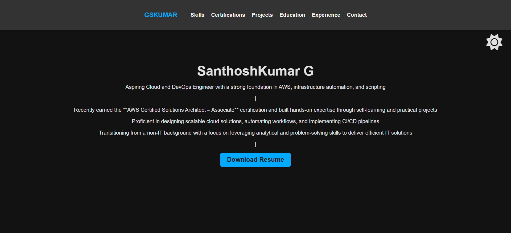

Project Overview
Detailed description of what the project is about, its purpose, and the problem it solves. Explain the motivation behind this project and any interesting challenges you faced.
Key Features
- Feature 1: Description of this feature
- Feature 2: Description of this feature
- Feature 3: Description of this feature
Technologies Used
AWS Services
- EC2
- S3
- Lambda
Infrastructure as Code
- Terraform
- CloudFormation
Containerization
- Docker
- ECS
Architecture Diagram

Architectural overview of the solution
Challenges & Solutions
Challenge 1
Description of the challenge you faced during development.
Solution
How you overcame this challenge, including any innovative approaches.
Challenge 2
Description of another challenge.
Solution
Your solution to this problem.
Results & Impact
Performance Improvement
Quantifiable results (e.g., "Reduced deployment time by 40%")
Cost Savings
Any cost optimizations achieved
Key Learnings
What you learned from this project